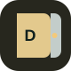

GAMES TEMPLATE · VERSION 1
DayZ
A Linux DayZ Dedicated Server installed with SteamCMD. Requires an amd64 host or working x86-64 emulation on ARM.
IMAGE
steamcmd/steamcmd:debian-12PERSISTENCE
Persistent application data at /data.
NETWORK
game · UDP 2302 client · UDP 2304 query · UDP 2305
SETUP
Configure 6 declared value(s) when creating a server. A Steam account is needed for installation.
Configuration
Values stay with your panel| Setting | Type | Requirement | Notes |
|---|---|---|---|
In-game admin passwordADMIN_PASSWORD | string | Required | Secret value |
In-game server nameDAYZ_SERVER_NAME | string | Optional | |
Player limitMAX_PLAYERS | int | Optional | |
Mod folders or Workshop IDsMODS | string | Optional | |
Join passwordSERVER_PASSWORD | string | Optional | Secret value |
Allow third-person viewTHIRD_PERSON | bool | Optional |